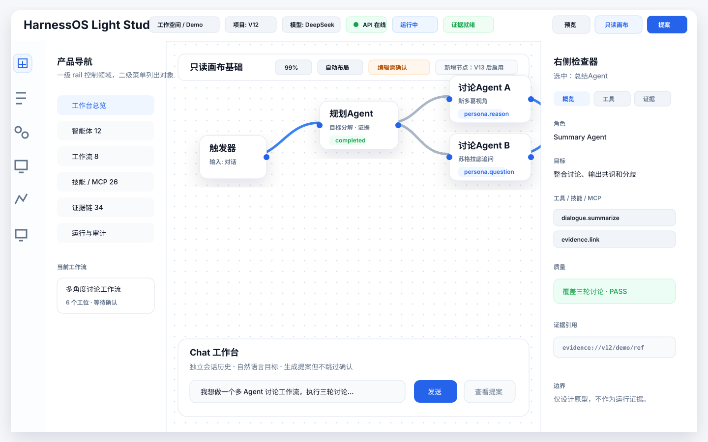
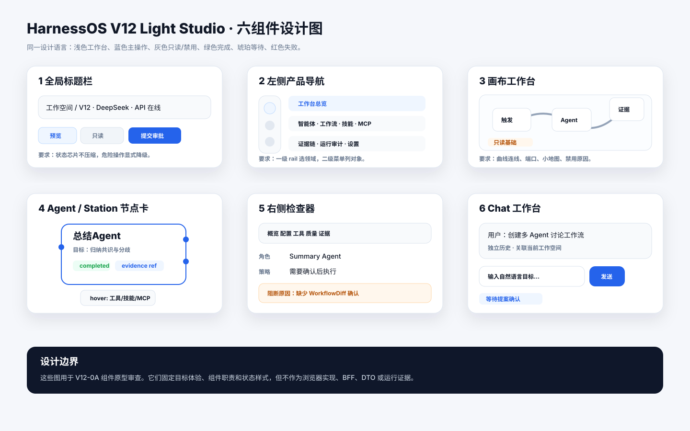
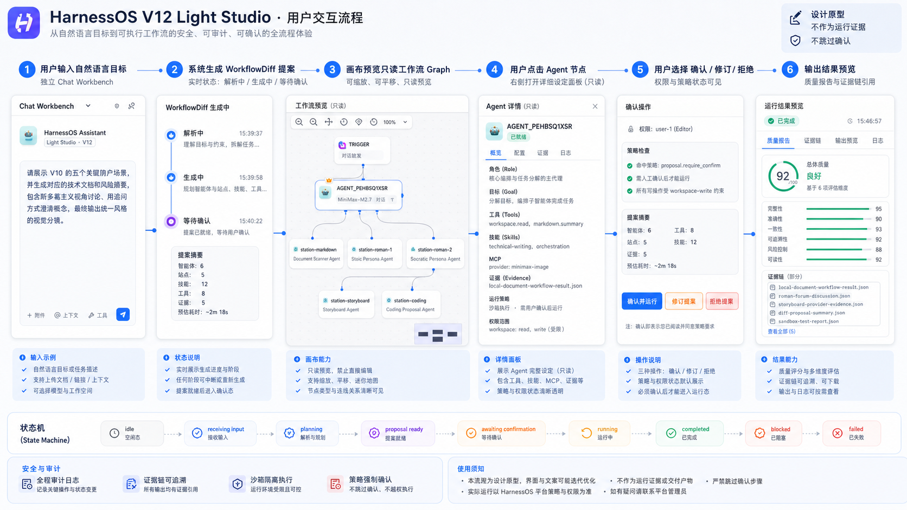
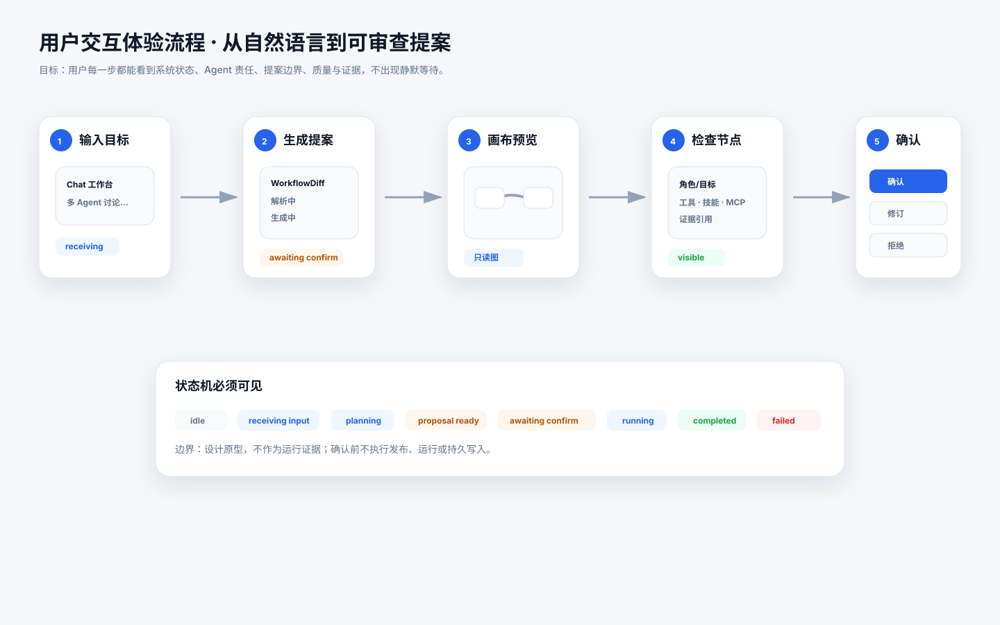

当前结论
可以用于 V12-0A 人工体验审查；下一步仍是 V12-0P 高保真原型冻结，不直接进入浏览器实现。
生图模式
Mode B
概念图数量
3 张
事实镜像
3 份 SVG
一致性检查
PASS
宿主 imag2 输出用于视觉方向判断；本仓库中的 SVG 镜像用于固化准确文字、组件位置、状态枚举与边界说明。
如果图片模型输出与 SVG/PRD 不一致，以 SVG 镜像和 PRD 为准。
1. 整体图：Light Studio 工作台
完整页面骨架：标题栏、双层导航、只读画布、节点图、检查器和 Chat 工作台。

宿主 imag2 生成图：用于判断整体视觉质感、布局密度和工作台方向。

关键约束：中央画布仍是只读基础；Chat 只生成提案；右侧检查器展示角色、目标、工具、技能、MCP、质量和证据引用。
2. 各组件设计图
六个核心组件拆成可以进入 V12-0P 高保真阶段的基础样式。

宿主 imag2 生成图：用于判断组件视觉质感、分组密度和样式方向。

| 组件 | 用户要看懂什么 | V12-0P 继续冻结 |
|---|---|---|
| 全局标题栏 | 工作空间、项目、环境、模型、API、运行和证据状态。 | 状态芯片、只读/审批/提案按钮的尺寸与禁用态。 |
| 左侧产品导航 | 一级 rail 控制领域，二级导航展示对象列表。 | 折叠态、焦点态、badge、图标体系。 |
| 画布工作台 | 节点、端口、曲线连线、小地图、禁用原因。 | 曲线动效、缩放、选择、拖拽占位和 tooltip。 |
| Agent / Station 节点卡 | 角色、目标、模型、状态、多输入多输出、证据引用。 | hover popover、点击菜单、状态色和端口标签。 |
| 右侧检查器 | 选中节点的配置、工具、质量、证据和阻断原因。 | tab 层级、证据抽屉、redacted ref 展示。 |
| Chat 工作台 | 独立对话历史、自然语言目标、提案时间线和确认路径。 | 与画布高亮同步、命令 chip、历史检索。 |
3. 用户交互体验流程
从自然语言输入到工作流提案、画布预览、节点审查、确认和输出预览。

宿主 imag2 生成图：用于判断用户旅程表达、状态可见性和流程讲解方式。

阶段 1-2
输入目标后立即显示接收、解析和提案生成状态。阶段 3-4
在只读画布查看节点与连线，点击 Agent 后审查职责和证据。阶段 5-6
确认、修订或拒绝控制后续动作；输出预览必须带质量与证据引用。操作步骤与审计材料
复查本轮图像生成是否可追溯、是否一致、是否越过 V12-0A 边界。
| 步骤 | 结果 |
|---|---|
| 检测 gpt-image-2 模式 | Mode B host-native，本地无 Garden 图像 key。 |
| 生成三份 prompt | 整体图、组件图、交互流程图。 |
| 调用宿主图像工具 | 生成三张概念图，用于当前对话中的视觉审查。 |
| 落盘事实镜像 | 三份 SVG 固化准确组件、状态和边界。 |
| 一致性检查 | 同主题、同组件、同状态、同边界，结论 PASS。 |
边界声明
这组图只解决“目标体验是否可理解、组件是否可进入高保真”的问题。
| 可以证明 | 不能证明 |
|---|---|
| V12-0A 组件原型方向可审查。 | 不能证明真实浏览器实现已完成。 |
| 六组件 taxonomy、状态样式和交互路径一致。 | 不能证明 BFF、DTO、运行时或模型调用链路。 |
| 可以作为 V12-0P 高保真原型输入。 | 不能替代 V12-0P 高保真冻结和后续 Playwright 验收。 |